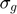
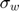
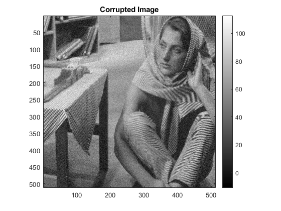
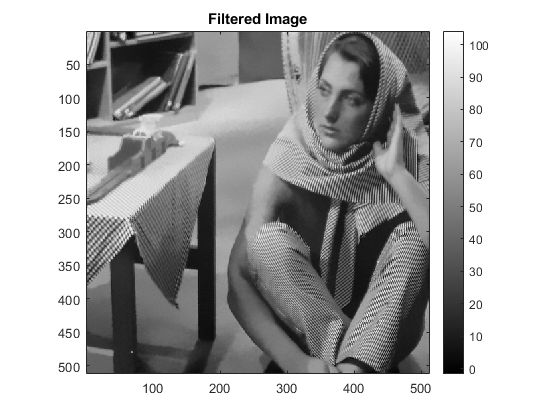
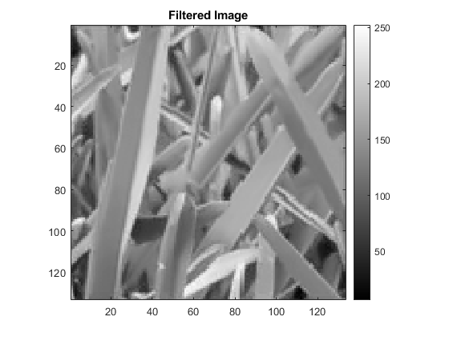
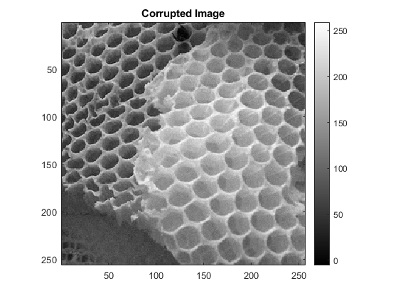
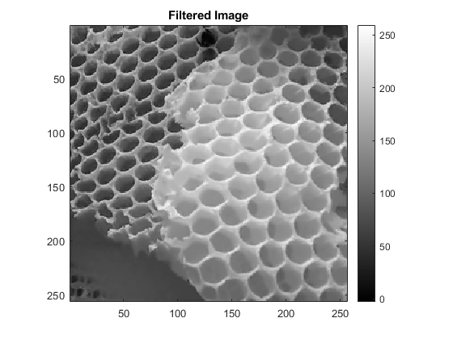
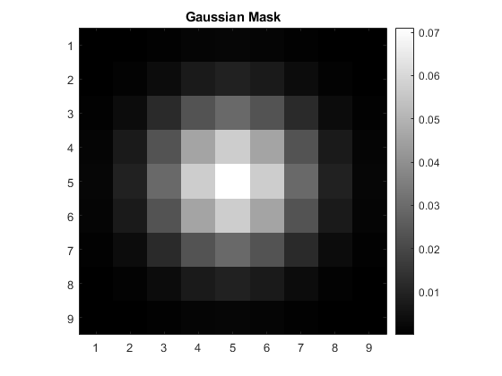

References & Ideology
We used the following references for this question:
1) The MATLAB documentation:
https://in.mathworks.com/matlabcentral/answers/316163-how-to-get-pixelcount-in-image
https://in.mathworks.com/matlabcentral/answers/13020-2d-gaussian-function
https://www.mathworks.com/help/images/ref/nlfilter.html
In this question, we note that patch filtering has two tunable parameters in general: one of them is the  parameter for the gaussian patch, and the other is the  parameter for the window. Here, we set the parameter of the gaussian patch to be 1.5 (since the patch is 9*9, this is a reasonably small value of sigma that should work well).
Then, we tune the value of the window, which was asked in the question.
Although having implemented and tested it (about 4.2x faster), we decided not to use Gaussian blurring + Downsampling, since the quality degradation is observable. Since we had enough time for the assignment, we decided to use only the high quality outputs, thus keeping the RMSD values significantly lower than the downsampled output.
Contents
Q3a
The optimal is 0.66
The RMSD for optimal is 2.5824
The RMSD for optimal * 0.9 is 2.6197
The RMSD for optimal * 1.1 is 2.6473
 Q3b
The optimal is 0.88
The RMSD for optimal is 3.8867
The RMSD for optimal * 0.9 is 3.9041
The RMSD for optimal * 1.1 is 3.9810
Q3c
The optimal is 0.9
The RMSD for optimal is 3.9328
The RMSD for optimal * 0.9 is 3.9387
The RMSD for optimal * 1.1 is 4.0038
 Q3d
The intensity diagram for the isotropic gaussian patch is as follows
